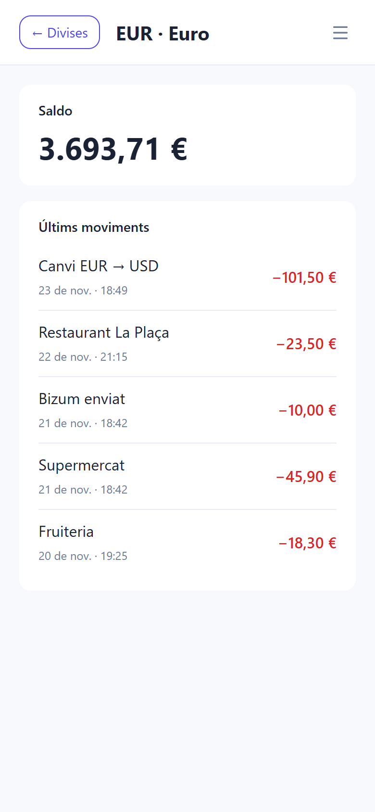
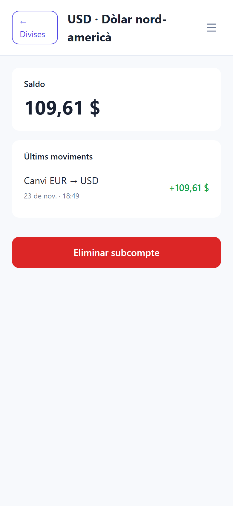
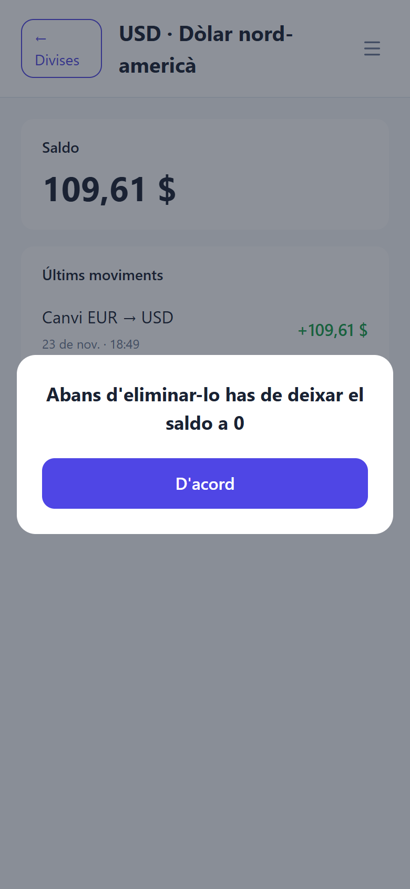
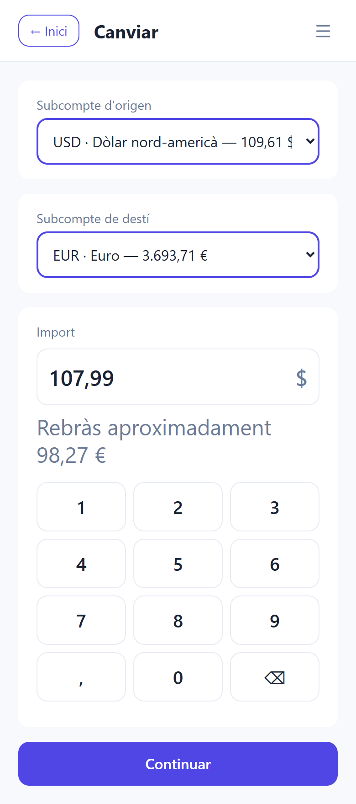
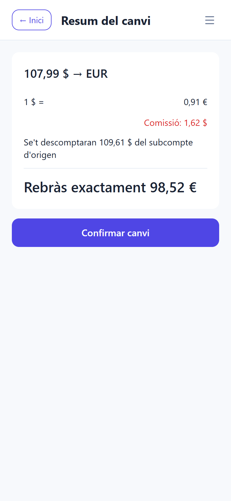
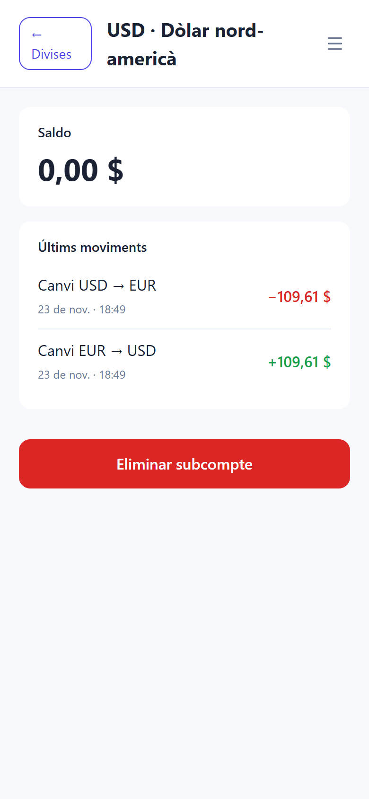
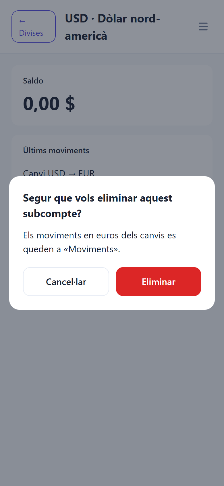
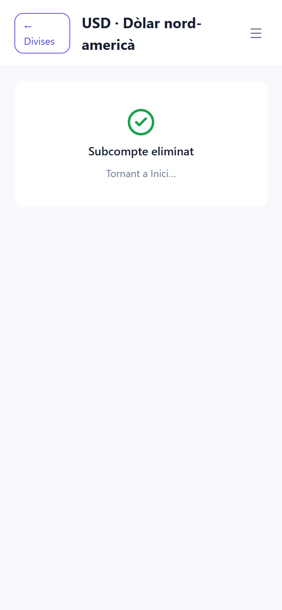
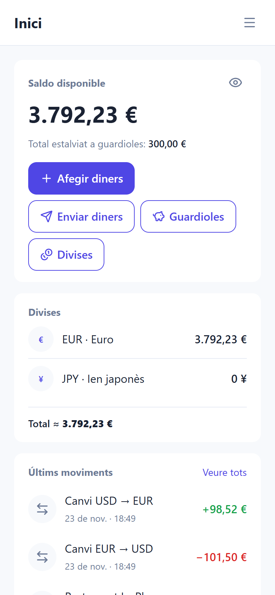

US-26Eliminar subcompte en divisa
Mockup · Evolt · 10 pantalles
1Inici
El botó «Divises» porta a la llista i al detall de cada subcompte.

2Detall de l'EUR
No hi ha el botó «Eliminar subcompte».

3Detall del USD
Saldo, últims moviments i «Eliminar subcompte».

4Amb saldo
«Abans d'eliminar-lo has de deixar el saldo a 0» i «D'acord».

5Per buidar el USD
Canviar-lo a euros; l'import més la comissió és tot el saldo.

6Resum
«Se't descomptaran 109,61 $», tot el saldo del USD.

7USD a 0,00 $, amb els dos canvis a l'historial.

8Amb saldo 0
«Segur que vols eliminar aquest subcompte?» amb «Cancel·lar» i «Eliminar».

9Èxit
«Subcompte eliminat» i «Tornant a Inici…».

10Inici sense el USD; els moviments en euros dels canvis es queden.
